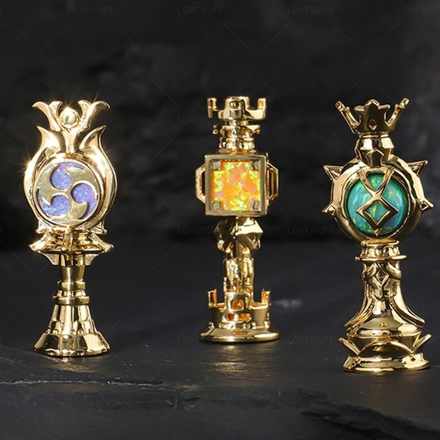
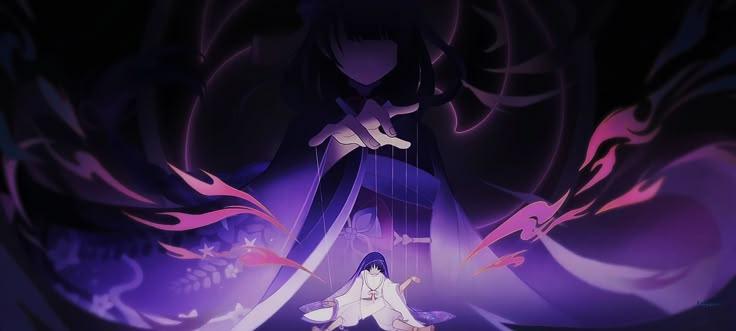
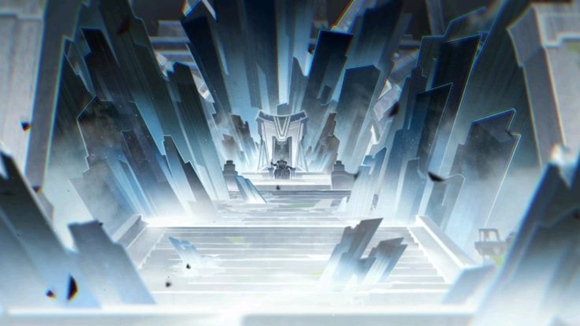
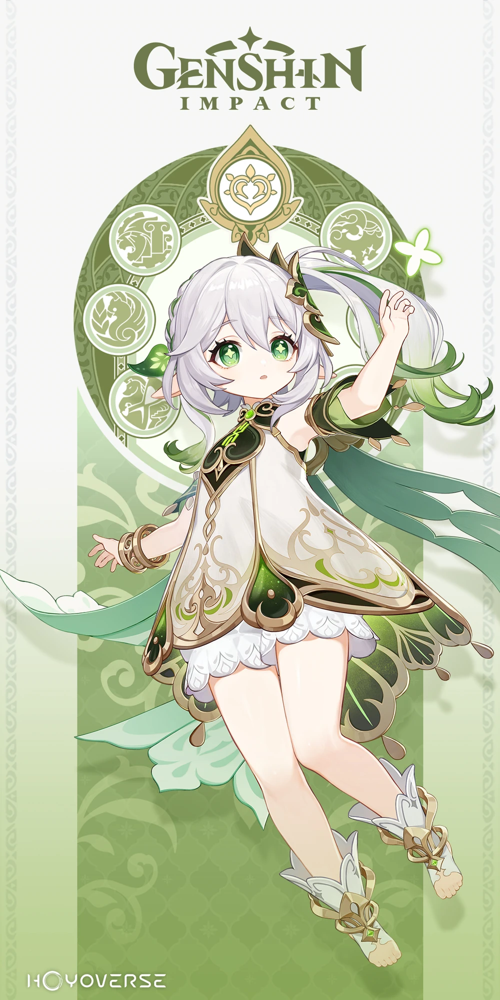
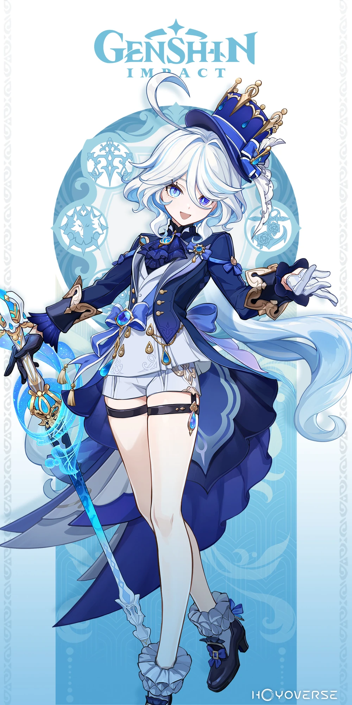
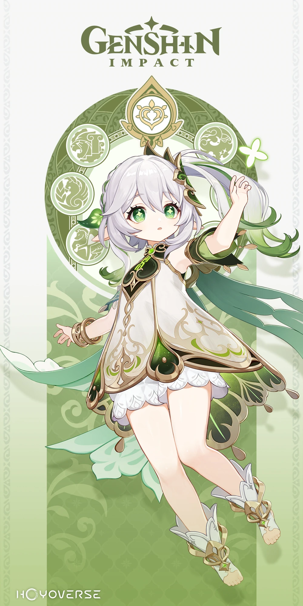
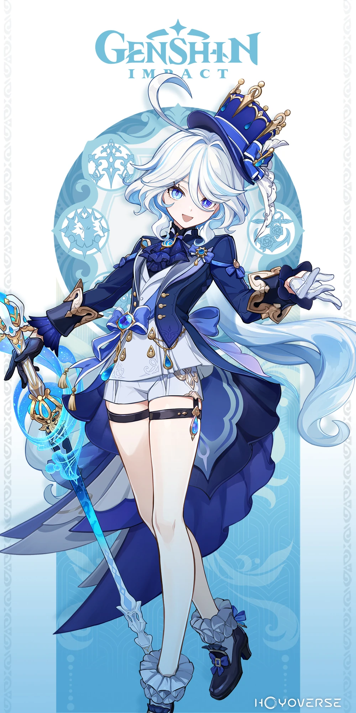
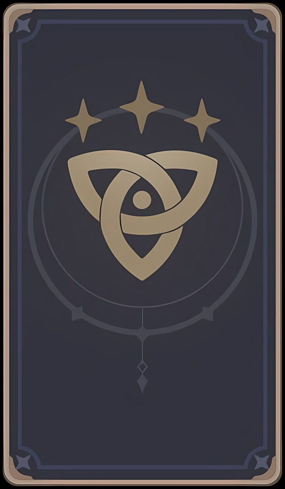
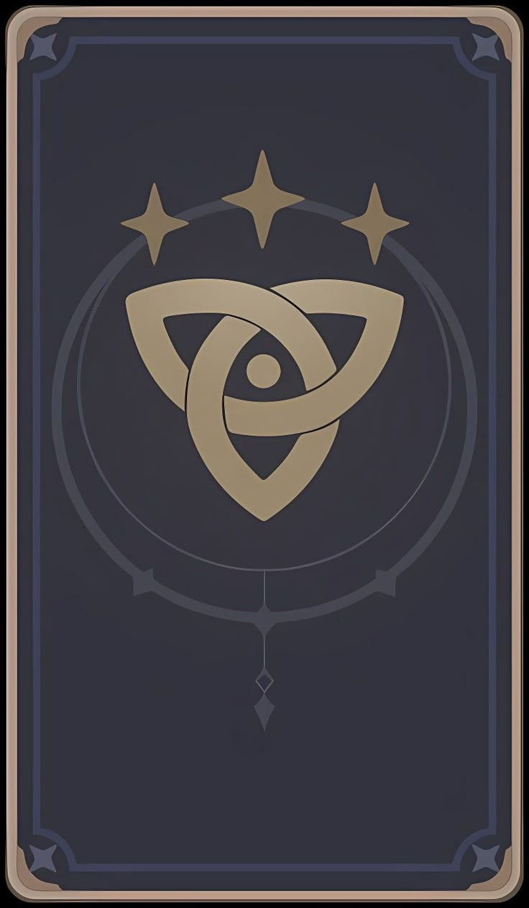

Each Archon presides over their respective element and have used it to shape the landscape and climate of their respective territories. This ability seems to be held by any god and not only The Seven, but ever since the end of the Archon War, there have only been seven Archons at a time. Unlike humans, who rely on resonance with a Vision to use the elements, the Archons seen so far were already affiliated with their elements before becoming Archons. While people on Teyvat commonly believe that the Archons grant Visions, they actually have no control over the distribution of Visions and are largely unaware of circumstances surrounding Visions.
While gnoses are described as being emblematic of an Archon's status and give them a direct connection to Celestia, their exact purpose and abilities remain a mystery. They evidently grant Archons a large power boost and the "divine ability" to defend their nations.
On multiple occasions, Archons have fashioned humanoid vessels using their powers as an Archon, perhaps through the use of their Gnoses. Although gods are immortal, their physical vessels — including those made with the power of an Archon — have finite lifespans and can be "killed," while their consciousness can fade away. By the time of the main story, five of the original Seven have died and been replaced. Vessels created through an Archon's power have another major weakness: they are incapable of being healed through ordinary means, including a Vision-bearer's healing abilities
Each Divine Throne is composed of one of the Elemental Authorities stolen from the Seven Sovereigns by the Heavenly Principles, and it is the Throne that grants each Archon their authority over the corresponding element, though what exactly this entails remains yet unknown. A great amount of power is required to destroy the Throne, and its destruction, resulting in the death of the Archon bound to the Throne, appears to be the only way to return the Authority contained within to the Sovereign.

 



 

There are past Archons which have died. In Nnazuma it's Makoto, Ei's twin sister. In Sumeru it is Greater Lord Rukkhadevata who is not only deceased but has also been erased in the current universe/timeline. In Fontaine it is Egeria then Focalors. In Natlan there is many which goes in the order from latest to earliest Xbalanque, Scarlet-Eyed Youth, Murata, Ndenge, Cochanina, Xumucul. Finally in Snezhnaya it is the Belyi Tsar.